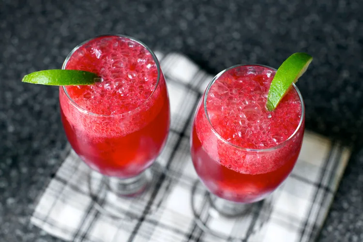

The drink category that goes by the name fizz are carbonated with water (club soda, seltzer or sparkling water) and something acidic/sour, like lemon or lime, often with a bit of sugar and ice. Sloe gin is a red liqueur flavored with a small fruit that is a plum relative called sloe berries; usually the gin is infused with them. But personally, I have little interest in infused cocktails.
This is where the blackberry gin fizz comes in, all of the fizzy gin but the fruit isn’t “infused;” it’s just there. And yeah, it’s a bit fruitier than the classic, and it’s also a lot prettier. It’s surprisingly tart and really refreshing and did I mention it was once a breakfast drink? What, you couldn’t drink gin for breakfast? Could you eat blackberries? What about a blackberry spritzer, with lime juice and a little sparkling water? I think you probably need to make this drink.